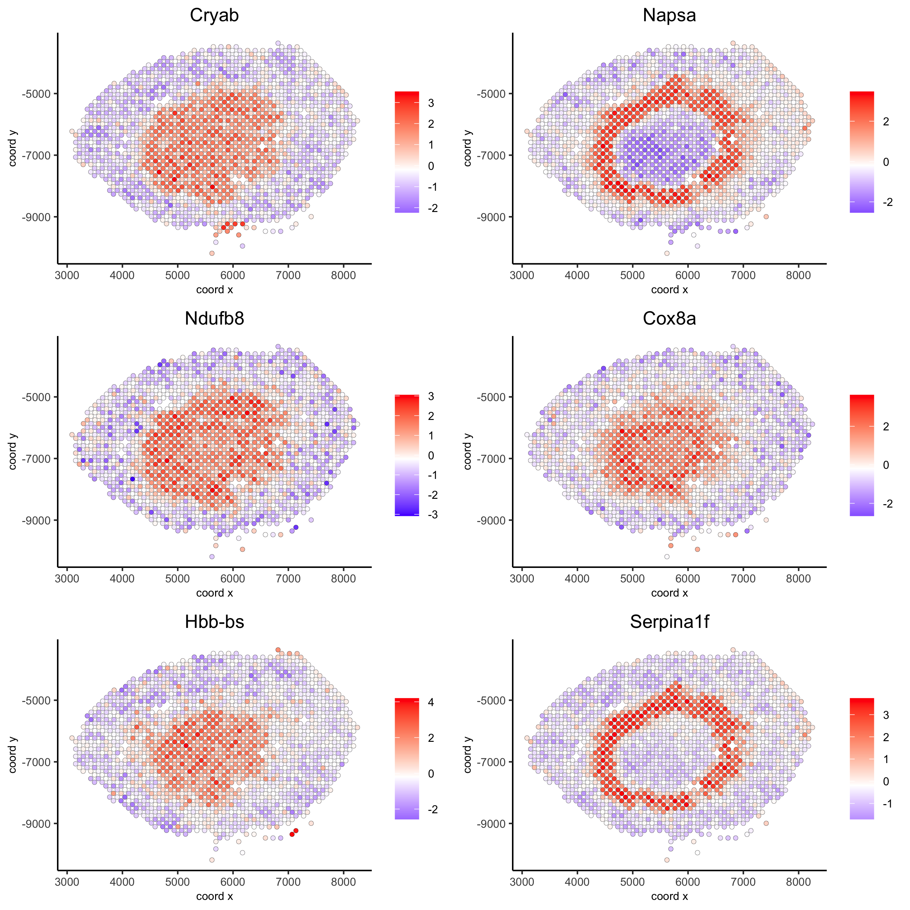
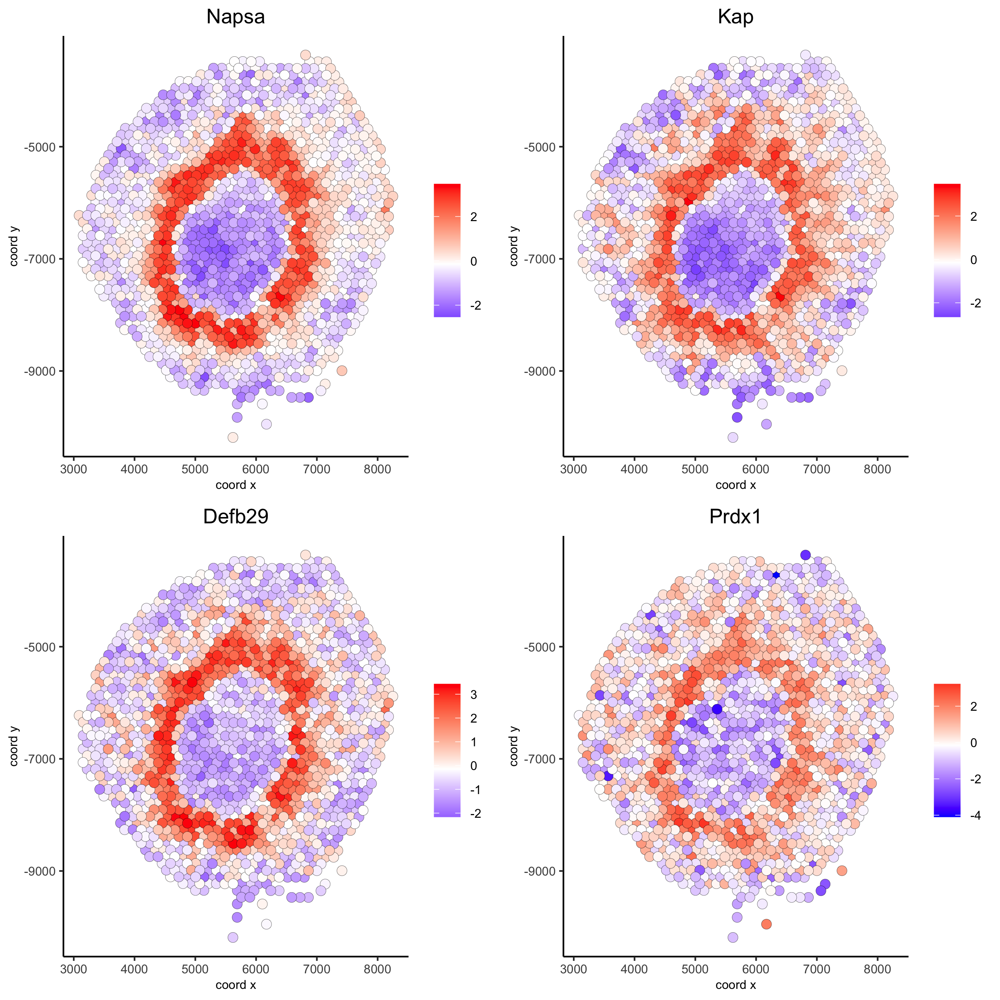

#> Warning: This tutorial was written with Giotto version 0.3.6.9046, your version
#> is 1.1.2.This is a more recent version and results should be reproducible
library(Giotto)
# 1. set working directory
results_folder = '/path/to/directory/'
# 2. set giotto python path
# set python path to your preferred python version path
# set python path to NULL if you want to automatically install (only the 1st time) and use the giotto miniconda environment
python_path = NULL
if(is.null(python_path)) {
installGiottoEnvironment()
}Dataset explanation
10X genomics recently launched a new platform to obtain spatial expression data using a Visium Spatial Gene Expression slide.
The Visium kidney data to run this tutorial can be found here
Visium technology:
High resolution png from original tissue:
Part 1: Giotto global instructions and preparations
## create instructions
instrs = createGiottoInstructions(save_dir = results_folder,
save_plot = TRUE,
show_plot = FALSE,
python_path = python_path)
## provide path to visium folder
data_path = '/path/to/Kidney_data/'part 2: Create Giotto object & process data
## directly from visium folder
visium_kidney = createGiottoVisiumObject(visium_dir = data_path, expr_data = 'raw',
png_name = 'tissue_lowres_image.png',
gene_column_index = 2, instructions = instrs)
## update and align background image
# problem: image is not perfectly aligned
spatPlot(gobject = visium_kidney, cell_color = 'in_tissue', show_image = T, point_alpha = 0.7,
save_param = list(save_name = '2_a_spatplot_image'))
# check name
showGiottoImageNames(visium_kidney) # "image" is the default name
# adjust parameters to align image (iterative approach)
visium_kidney = updateGiottoImage(visium_kidney, image_name = 'image',
xmax_adj = 1300, xmin_adj = 1200,
ymax_adj = 1100, ymin_adj = 1000)
# now it's aligned
spatPlot(gobject = visium_kidney, cell_color = 'in_tissue', show_image = T, point_alpha = 0.7,
save_param = list(save_name = '2_b_spatplot_image_adjusted'))
## check metadata
pDataDT(visium_kidney)
## compare in tissue with provided jpg
spatPlot(gobject = visium_kidney, cell_color = 'in_tissue', point_size = 2,
cell_color_code = c('0' = 'lightgrey', '1' = 'blue'),
save_param = list(save_name = '2_c_in_tissue'))
## subset on spots that were covered by tissue
metadata = pDataDT(visium_kidney)
in_tissue_barcodes = metadata[in_tissue == 1]$cell_ID
visium_kidney = subsetGiotto(visium_kidney, cell_ids = in_tissue_barcodes)
## filter
visium_kidney <- filterGiotto(gobject = visium_kidney,
expression_threshold = 1,
gene_det_in_min_cells = 50,
min_det_genes_per_cell = 1000,
expression_values = c('raw'),
verbose = T)
## normalize
visium_kidney <- normalizeGiotto(gobject = visium_kidney, scalefactor = 6000, verbose = T)
## add gene & cell statistics
visium_kidney <- addStatistics(gobject = visium_kidney)
## visualize
spatPlot2D(gobject = visium_kidney, show_image = T, point_alpha = 0.7,
save_param = list(save_name = '2_d_spatial_locations'))
spatPlot2D(gobject = visium_kidney, show_image = T, point_alpha = 0.7,
cell_color = 'nr_genes', color_as_factor = F,
save_param = list(save_name = '2_e_nr_genes'))part 3: dimension reduction
## highly variable genes (HVG)
visium_kidney <- calculateHVG(gobject = visium_kidney,
save_param = list(save_name = '3_a_HVGplot'))
## run PCA on expression values (default)
visium_kidney <- runPCA(gobject = visium_kidney, center = TRUE, scale_unit = TRUE)
screePlot(visium_kidney, ncp = 30, save_param = list(save_name = '3_b_screeplot'))
## run UMAP and tSNE on PCA space (default)
visium_kidney <- runUMAP(visium_kidney, dimensions_to_use = 1:10)
plotUMAP(gobject = visium_kidney,
save_param = list(save_name = '3_d_UMAP_reduction'))
part 4: cluster
## sNN network (default)
visium_kidney <- createNearestNetwork(gobject = visium_kidney, dimensions_to_use = 1:10, k = 15)
## Leiden clustering
visium_kidney <- doLeidenCluster(gobject = visium_kidney, resolution = 0.4, n_iterations = 1000)
plotUMAP(gobject = visium_kidney,
cell_color = 'leiden_clus', show_NN_network = T, point_size = 2.5,
save_param = list(save_name = '4_a_UMAP_leiden'))part 5: co-visualize
# expression and spatial
spatDimPlot(gobject = visium_kidney, cell_color = 'leiden_clus',
dim_point_size = 2, spat_point_size = 2.5,
save_param = list(save_name = '5_a_covis_leiden'))
spatDimPlot(gobject = visium_kidney, cell_color = 'nr_genes', color_as_factor = F,
dim_point_size = 2, spat_point_size = 2.5,
save_param = list(save_name = '5_b_nr_genes'))part 6: cell type marker gene detection
gini
gini_markers_subclusters = findMarkers_one_vs_all(gobject = visium_kidney,
method = 'gini',
expression_values = 'normalized',
cluster_column = 'leiden_clus',
min_genes = 20,
min_expr_gini_score = 0.5,
min_det_gini_score = 0.5)
topgenes_gini = gini_markers_subclusters[, head(.SD, 2), by = 'cluster']$genes
# violinplot
violinPlot(visium_kidney, genes = unique(topgenes_gini), cluster_column = 'leiden_clus',
strip_text = 8, strip_position = 'right',
save_param = c(save_name = '6_a_violinplot_gini', base_width = 5, base_height = 10))
# cluster heatmap
plotMetaDataHeatmap(visium_kidney, selected_genes = topgenes_gini,
metadata_cols = c('leiden_clus'),
x_text_size = 10, y_text_size = 10,
save_param = c(save_name = '6_b_metaheatmap_gini'))
# umap plots
dimGenePlot2D(visium_kidney, expression_values = 'scaled',
genes = gini_markers_subclusters[, head(.SD, 1), by = 'cluster']$genes,
cow_n_col = 3, point_size = 1,
save_param = c(save_name = '6_c_gini_umap', base_width = 8, base_height = 5))scran
scran_markers_subclusters = findMarkers_one_vs_all(gobject = visium_kidney,
method = 'scran',
expression_values = 'normalized',
cluster_column = 'leiden_clus')
topgenes_scran = scran_markers_subclusters[, head(.SD, 2), by = 'cluster']$genes
# violinplot
violinPlot(visium_kidney, genes = unique(topgenes_scran), cluster_column = 'leiden_clus',
strip_text = 10, strip_position = 'right',
save_param = c(save_name = '6_d_violinplot_scran', base_width = 5))
# cluster heatmap
plotMetaDataHeatmap(visium_kidney, selected_genes = topgenes_scran,
metadata_cols = c('leiden_clus'),
save_param = c(save_name = '6_e_metaheatmap_scran'))
# umap plots
dimGenePlot(visium_kidney, expression_values = 'scaled',
genes = scran_markers_subclusters[, head(.SD, 1), by = 'cluster']$genes,
cow_n_col = 3, point_size = 1,
save_param = c(save_name = '6_f_scran_umap', base_width = 8, base_height = 5))part 7: cell-type annotation
Visium spatial transcriptomics does not provide single-cell
resolution, making cell type annotation a harder problem. Giotto
provides 3 ways to calculate enrichment of specific cell-type signature
gene list:
- PAGE
- rank
- hypergeometric test
See the mouse Visium brain dataset for an example.
part 8: spatial grid
visium_kidney <- createSpatialGrid(gobject = visium_kidney,
sdimx_stepsize = 400,
sdimy_stepsize = 400,
minimum_padding = 0)
spatPlot(visium_kidney, cell_color = 'leiden_clus', show_grid = T,
grid_color = 'red', spatial_grid_name = 'spatial_grid',
save_param = c(save_name = '8_grid'))part 9: spatial network
## delaunay network: stats + creation
plotStatDelaunayNetwork(gobject = visium_kidney, maximum_distance = 400,
save_param = c(save_name = '9_a_delaunay_network'))
visium_kidney = createSpatialNetwork(gobject = visium_kidney, minimum_k = 0)
showNetworks(visium_kidney)
spatPlot(gobject = visium_kidney, show_network = T,
network_color = 'blue', spatial_network_name = 'Delaunay_network',
save_param = c(save_name = '9_b_delaunay_network'))
part 10: spatial genes
Spatial genes
## kmeans binarization
kmtest = binSpect(visium_kidney)
spatGenePlot(visium_kidney, expression_values = 'scaled',
genes = kmtest$genes[1:6], cow_n_col = 2, point_size = 1.5,
save_param = c(save_name = '10_a_spatial_genes_km'))
## rank binarization
ranktest = binSpect(visium_kidney, bin_method = 'rank')
spatGenePlot(visium_kidney, expression_values = 'scaled',
genes = ranktest$genes[1:6], cow_n_col = 2, point_size = 1.5,
save_param = c(save_name = '10_b_spatial_genes_rank'))
Spatial co-expression patterns
## spatially correlated genes ##
ext_spatial_genes = kmtest[1:500]$genes
# 1. calculate gene spatial correlation and single-cell correlation
# create spatial correlation object
spat_cor_netw_DT = detectSpatialCorGenes(visium_kidney,
method = 'network',
spatial_network_name = 'Delaunay_network',
subset_genes = ext_spatial_genes)
# 2. identify most similar spatially correlated genes for one gene
Napsa_top10_genes = showSpatialCorGenes(spat_cor_netw_DT, genes = 'Napsa', show_top_genes = 10)
spatGenePlot(visium_kidney, expression_values = 'scaled',
genes = c('Napsa', 'Kap', 'Defb29', 'Prdx1'), point_size = 3,
save_param = c(save_name = '10_d_Napsa_correlated_genes'))
# 3. cluster correlated genes & visualize
spat_cor_netw_DT = clusterSpatialCorGenes(spat_cor_netw_DT, name = 'spat_netw_clus', k = 8)
heatmSpatialCorGenes(visium_kidney, spatCorObject = spat_cor_netw_DT, use_clus_name = 'spat_netw_clus',
save_param = c(save_name = '10_e_heatmap_correlated_genes', save_format = 'pdf',
base_height = 6, base_width = 8, units = 'cm'),
heatmap_legend_param = list(title = NULL))
# 4. rank spatial correlated clusters and show genes for selected clusters
netw_ranks = rankSpatialCorGroups(visium_kidney, spatCorObject = spat_cor_netw_DT, use_clus_name = 'spat_netw_clus',
save_param = c(save_name = '10_f_rank_correlated_groups',
base_height = 3, base_width = 5))
top_netw_spat_cluster = showSpatialCorGenes(spat_cor_netw_DT, use_clus_name = 'spat_netw_clus',
selected_clusters = 6, show_top_genes = 1)
# 5. create metagene enrichment score for clusters
cluster_genes_DT = showSpatialCorGenes(spat_cor_netw_DT, use_clus_name = 'spat_netw_clus', show_top_genes = 1)
cluster_genes = cluster_genes_DT$clus; names(cluster_genes) = cluster_genes_DT$gene_ID
visium_kidney = createMetagenes(visium_kidney, gene_clusters = cluster_genes, name = 'cluster_metagene')
spatCellPlot(visium_kidney,
spat_enr_names = 'cluster_metagene',
cell_annotation_values = netw_ranks$clusters,
point_size = 1.5, cow_n_col = 4,
save_param = c(save_name = '10_g_spat_enrichment_score_plots',
base_width = 13, base_height = 6))
# example for gene per cluster
top_netw_spat_cluster = showSpatialCorGenes(spat_cor_netw_DT, use_clus_name = 'spat_netw_clus',
selected_clusters = 1:8, show_top_genes = 1)
first_genes = top_netw_spat_cluster[, head(.SD, 1), by = clus]$gene_ID
cluster_names = top_netw_spat_cluster[, head(.SD, 1), by = clus]$clus
names(first_genes) = cluster_names
first_genes = first_genes[as.character(netw_ranks$clusters)]
spatGenePlot(visium_kidney, genes = first_genes, expression_values = 'scaled', cow_n_col = 4, midpoint = 0, point_size = 2,
save_param = c(save_name = '10_h_spat_enrichment_score_plots_genes',
base_width = 11, base_height = 6))part 11: HMRF domains
# HMRF requires a fully connected network!
visium_kidney = createSpatialNetwork(gobject = visium_kidney, minimum_k = 2, name = 'Delaunay_full')
# spatial genes
my_spatial_genes <- kmtest[1:100]$genes
# do HMRF with different betas
hmrf_folder = paste0(results_folder,'/','11_HMRF/')
if(!file.exists(hmrf_folder)) dir.create(hmrf_folder, recursive = T)
HMRF_spatial_genes = doHMRF(gobject = visium_kidney, expression_values = 'scaled',
spatial_network_name = 'Delaunay_full',
spatial_genes = my_spatial_genes,
k = 5,
betas = c(0, 1, 6),
output_folder = paste0(hmrf_folder, '/', 'Spatial_genes/SG_topgenes_k5_scaled'))
## view results of HMRF
for(i in seq(0, 5, by = 1)) {
viewHMRFresults2D(gobject = visium_kidney,
HMRFoutput = HMRF_spatial_genes,
k = 5, betas_to_view = i,
point_size = 2)
}
## alternative way to view HMRF results
#results = writeHMRFresults(gobject = ST_test,
# HMRFoutput = HMRF_spatial_genes,
# k = 5, betas_to_view = seq(0, 25, by = 5))
#ST_test = addCellMetadata(ST_test, new_metadata = results, by_column = T, column_cell_ID = 'cell_ID')
## add HMRF of interest to giotto object
visium_kidney = addHMRF(gobject = visium_kidney,
HMRFoutput = HMRF_spatial_genes,
k = 5, betas_to_add = c(0, 2),
hmrf_name = 'HMRF')
## visualize
spatPlot(gobject = visium_kidney, cell_color = 'HMRF_k5_b.0', point_size = 5,
save_param = c(save_name = '11_a_HMRF_k5_b.0'))Export and create Giotto Viewer
# check which annotations are available
combineMetadata(visium_kidney)
# select annotations, reductions and expression values to view in Giotto Viewer
viewer_folder = paste0(results_folder, '/', 'mouse_visium_kidney_viewer')
exportGiottoViewer(gobject = visium_kidney,
output_directory = viewer_folder,
spat_enr_names = 'PAGE',
factor_annotations = c('in_tissue',
'leiden_clus'),
numeric_annotations = c('nr_genes',
'clus_25'),
dim_reductions = c('tsne', 'umap'),
dim_reduction_names = c('tsne', 'umap'),
expression_values = 'scaled',
expression_rounding = 2,
overwrite_dir = T)